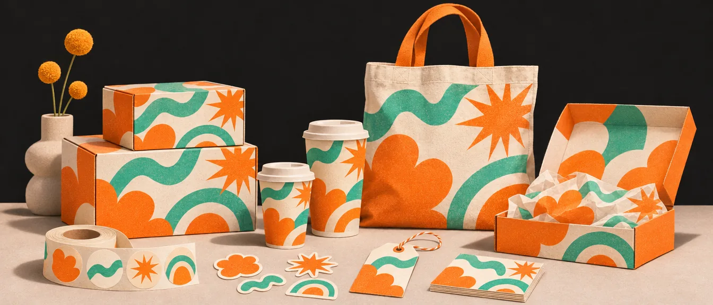
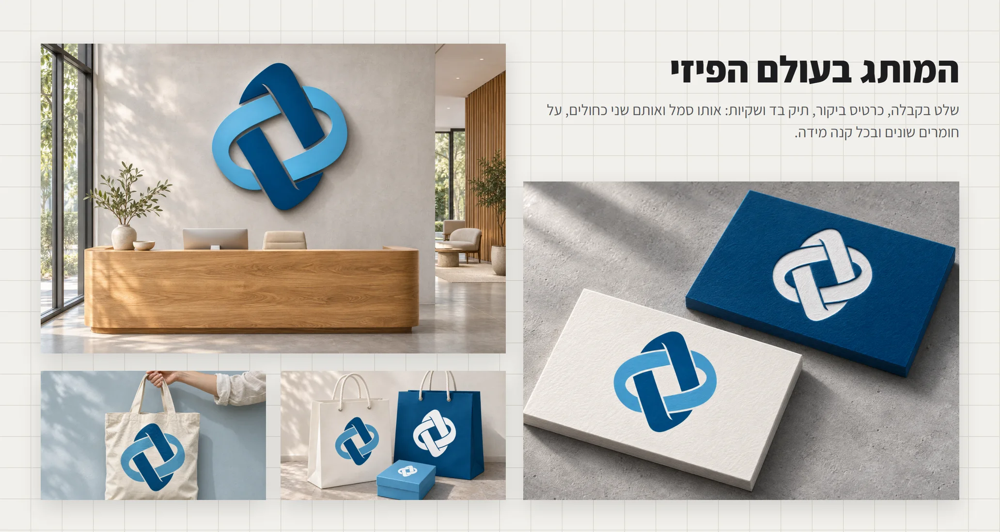
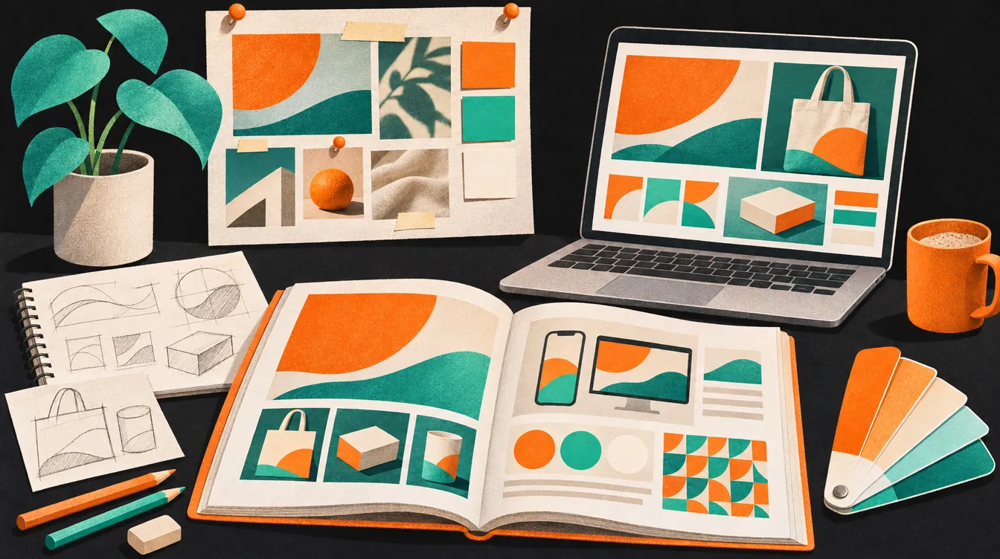

יישומים ומוקאפים
לוגו יפה על רקע לבן עוד לא אומר כלום. מיתוג נבחן כשהוא יוצא לעולם: על כוס, על שקית, על שלט ועל מסך של טלפון. מוקאפים הם הדרך להראות את זה, ללקוח ולכל מי שמסתכל על תיק העבודות שלכם.

הרחבת יישומים: איפה רואים אם השפה עובדת
מיתוג נבחן על היכולת שלו להחזיק מגוון שימושים: תפריטים, אריזות, כוסות, שילוט, עמוד אינסטגרם, מודעה מודפסת, באנר דיגיטלי. אם השפה נשמרת בכל אלה, היא באמת עובדת.
יש למותג דמות או סגנון איור? הוא צריך להתפתח לסדרה של סצנות ושימושים, ולא רק לחזור כאלמנט אחד. שפה איורית
מוקאפים: המותג בעולם האמיתי
מוקאפים (Mockups) הם כלי חשוב להצגת המותג במציאות. הם מאפשרים לראות איך הלוגו והשפה העיצובית נראים בעולם האמיתי, לא רק על מסך. מוקאפים טובים עוזרים ללקוח ולצופה להבין את הפוטנציאל של המותג ולדמיין אותו בפעולה.
הצגת מוקאפים מומלצת
מוצרים ושילוט
הציגו את המותג על גבי אריזות, פוסטרים, שלטי חוצות, חזיתות חנויות ורכבי שירות. כך אפשר לראות כיצד הלוגו משתלב בקנה מידה גדול ובסביבה פיזית אמיתית.
מדיה דיגיטלית
הראו שימוש בשפה העיצובית בתוך רשתות חברתיות, באנרים, תמונות פרופיל, עמודי נחיתה ואייקוני אפליקציה. זה מדגים את הנוכחות הדיגיטלית של המותג ואת היכולת לשמור על אחידות בין פלטפורמות שונות.
כל המידותדברי דפוס
שלבו הדמיות של ניירת משרדית, כרטיסי ביקור, מעטפות, גלויות, כרטיסי עובד או מתנה. אלו מדגישים את הזהות הארגונית ואת תשומת הלב לפרטים הקטנים.
דוגמה: מותג אחד, הרבה חפצים
מיתוג OULA: שקיות, קופסאות, מגדל של קופסאות עגולות, כוסות ומארז. בכל תמונה יש אותו כתום, אותו קו איור ואותן דמויות, והצילום עצמו שומר על אותו אור רך ואותו רקע. זה בדיוק מה שמוקאפים צריכים להראות.


מהמצגת שלי: שלט, תיק וכרטיס


עקרונות חשובים
- ודאו שכל המוקאפים משדרים אחידות, איכות וריאליזם: אותו סגנון אור, זווית וצבעוניות.
- אל תערבבו סגנונות הדמיה שונים (למשל: ריאליסטי מול וקטורי).
- זכרו שהמוקאפים הם חלק מהמיתוג עצמו. הם לא רק הצגה יפה, הם דרך לתקשר את השפה החזותית.
בחרו מוקאפים שמדגישים את החוזקות של העיצוב שלכם. הציגו אותו על אריזת מוצר, כרטיס ביקור, שלט חוצות, רכב ממותג וכו'. בגדול, כל מוצר שרלוונטי לעולם התוכן של המותג.
דוגמאות שימוש: מה להדמות בפרויקט
מאוד חשוב לפרויקט. בפרויקט מיתוג לתיק עבודות, אלה היישומים שכדאי להראות, לדוגמה:
- אריזה
- בקבוק / צנצנת
- פוסטרים
- סטיקרים
- מדבקות רחוב
- חולצה / מרצ'נדייז
וכל השאר, מלוגו ועד ספר מותג, מסודר ברשימה אחת שאפשר לסמן תוך כדי עבודה. רשימת הבדיקה
איפה מוצאים מוקאפים
לא צריך לצלם כל שקית בסטודיו. רוב המוקאפים המקצועיים הם קבצי פוטושופ עם Smart Object: לוחצים פעמיים על השכבה, מדביקים את העיצוב, שומרים, והוא נעטף על החפץ עם הצל, הקמטים והאור. כמה מקורות טובים:
חינמי, גם למסחרי
אלפי קבצי פוטושופ: אריזות, דפוס, שילוט וקירות ברחוב. בלי הרשמה, ומותר גם בעבודה ללקוח. לאתר
למתחילים
כלי המוקאפים של קנבה (לשעבר Smartmockups). עובד בדפדפן, בלי פוטושופ, וזמין גם בחשבון החינמי. לאתר
וגם AI יודע לייצר הדמיות ריאליסטיות מהר. זה כלי עבודה לגיטימי, כל עוד ההחלטות נשארות שלכם. AI כסקצ'בוק
„חינם” לא תמיד אומר „מותר בכל מקום”. לפני שמשתמשים בעבודה ללקוח, קוראים את תנאי השימוש של הקובץ. ובכל מקרה, מוקאפ אחד ממקור אחד שומר על האחידות טוב יותר מעשרה ממקורות שונים.
איך בונים פרויקט מיתוג לתיק עבודות

המוקאפים הם לא הפרויקט כולו, הם הפרק של „ככה זה נראה בעולם”. פרויקט מיתוג טוב בתיק עבודות מספר סיפור לפי הסדר הזה:
- Challengeהאתגר
מה הבעיה של הלקוח, ובאיזה שוק הוא פועל.
- Researchמחקר
מתחרים, קהל, ומה למדתם מהם.
- Strategyאסטרטגיה
מיצוב, מסרים, ואיך המותג מדבר.
- Designעיצוב
כיווני חיפוש, גלגולים, והזהות הסופית.
- Applicationsיישומים
המוקאפים: המותג בכל נקודות המגע.
- Resultsתוצאות
מה השתנה: מספרים, ציטוט מהלקוח, תמונות מההשקה.
הרבה תמונות, מעט טקסט. אם יש לכם „לפני” ו„אחרי”, הראו אותם זה ליד זה. ופרויקט לימודי בלי תוצאות אמיתיות? סיימו ביישומים ובעמוד מספר המותג. בלי חפירות
ואיך מציגים את כל זה ללקוח, שקף אחרי שקף? הצגה ללקוח